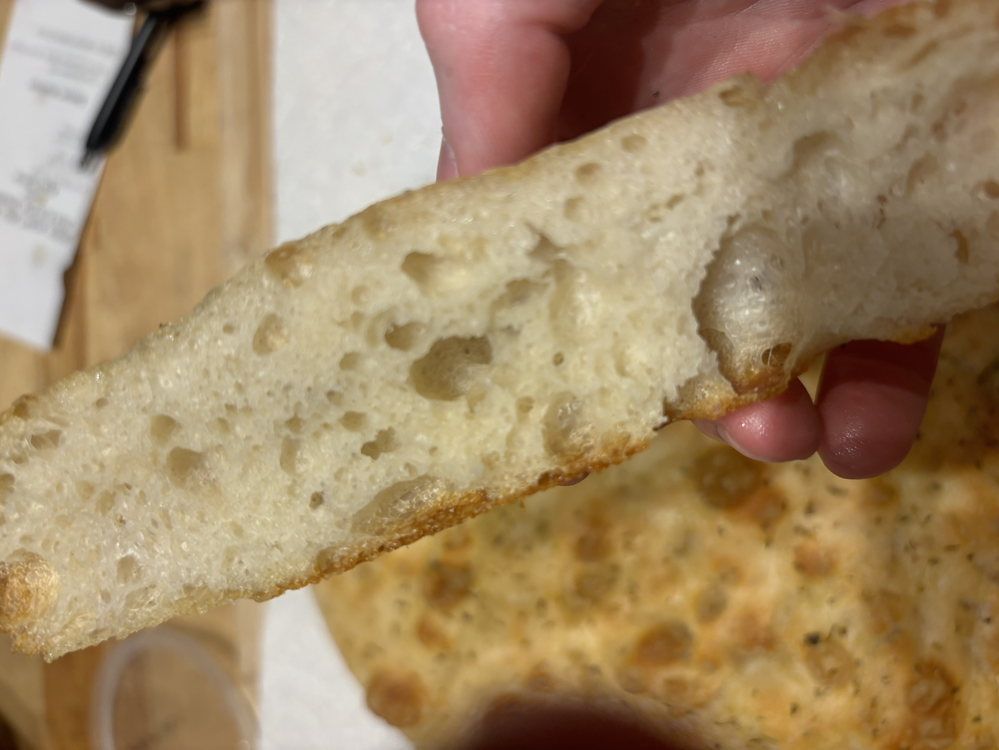

Basic Focaccia
Home

What Even Is Focaccia?
Focaccia is a classic leavened Italian bread perfect for sandwiches or as a side! This recipe will use rosemary, but focaccia is great for topping experimentation!
Equipment
- Large mixing bowl
- Thermometer
- Digital kitchen scale
- Large proofing bowl or bin
- Wire cooling rack
- Cast iron pan
- Proofing bag
Ingredients
- 500g All Purpose flour
- 400g Water
- 10g Salt
- 75g Olive oil
- Additional olive oil for topping
- Three sprigs of fresh rosemary
- Additional salt for topping
Steps
- Add flour and warm water (aim for roughly 90-95°F) to your mixing bowl and mix until just combined
- Let rest for 30 minutes
- Add olive oil and salt and mix thoroughly (your dough will be sticky and wet, this is good!)
- Transfer dough to your proofing bin and let rest for 30 minutes
- Perform a series of five stretch and folds
- Repeat steps 4 and 5 for the next two hours (five total stretch and folds). You should notice your dough is becoming stronger after each series of folds!
- Allow dough to double in size
- Transfer to a well oiled cast iron
- Using your hands gently spread your dough until it fills the pan
- Place cast iron into a proofing bag
- Preheat your oven to 475°F and finely chop your rosemary leaves
- After the dough has once again doubled in size drizzle your dough with olive oil, give it a light dusting of salt, and sprinkle rosemary across it
- Finally, dimple your dough and place into the oven
- Bake for around 30 minutes or until dough is a golden brown
- Carefully remove from your cast iron pan and transfer to a cooling rack
- Let sit for at least thirty minutes and enjoy!